A l'arrivée, beau temps et pattes de mouettes sur le sable vierge...
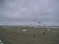
Il y a quand même eu quelques courageux, comme le team AWITA. Ils ont même sorti plus tard une arche de deltas de 400 m de long, avec des deltas attachés tout au long par des petites lignes. Magnifique et grandiose. Mais la corde de l'arche a explosé ! Le tout s'est transformé d'abord en train, en ramassant tout au passage. et puis les deltas attachés comme ça, ça ne peut pas voler en train ! Alors le total s'est écroulé lentement mais sûrement... J'ai bien regretté, je n'étais pas là pour le voir ! Vous découragez pas, les jumeaux, ça valait le coup, recommencez !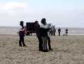
Les Flics ont eux aussi fait leur show, bien protégés !agrandissez pour des détails ->
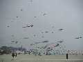
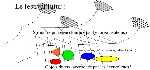
Pour les non-puristes, passez ce paragraphe : les objets ci-dessus, plus ou moins pendus à des "porteurs" meublent bien les azurs mais ne sont pas vraiment des cerfs-volants et cette floraison se développe de plus en plus, prenant beaucoup de place sur les festivals, au détriment évidemment des "vrais" cerfs-volants qui vont voler plus loin pour ne pas provoquer de catas ou en subir. On pourrait concevoir carrément une structure mise en place par l'organisation à laquelle les participants n'auraient plus qu'à accrocher leur objets. Ca simplifierait bien la conception ! Pourtant, dans l'ensemble, c'est beau, alors, foin du purisme et assumons, à condition qu'on nous laisse un peu de place...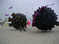 | 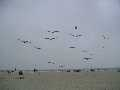 | 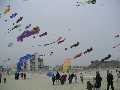 | 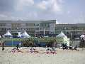 |
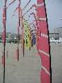 | 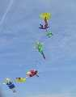 | 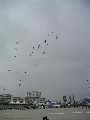 | 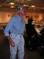 |
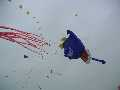 | 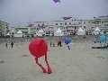 | 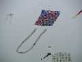 | 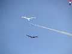 |
| ...pour les enfants | de Blandine | mais avec une queue importante | |
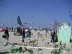 | 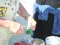 | 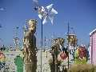 | 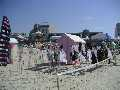 | 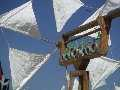 |
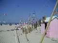 | 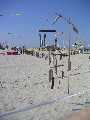 | 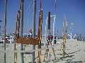 | 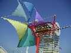 | 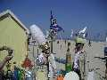 |
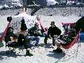
Au début de la semaine, quelques chars à voile de débutants grées de mouchoirs de poche descendaient la plage à 100 km/h !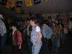
Les soirées sous la tente "VIP" (tous les cervolistes étaient des VIP, merci Gérard), par exemple la soirée Country Music (voir photo), ou sous le Magic Mirror, sorte de grand théâtre en rond et en bois sur l'esplanade et dont l'accès était gratuit pour les cervolistes.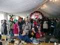
Toujours sous la tente, le concours de chapeaux des jardiniers du vent, avec quelques belles créations de mode !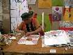
Il y avait aussi toutes les tentes sur la promenade : expo "Photo par cerf-volant", articles de Bali, artisans indonésiens, coréens et même français, produisant des cerfs-volants de combat ou leurs spécialités : Wau, Jan Bang, Chulas et Papkaos (il y a eu des combats), cerfs-volants de pécheurs en feuilles d'arbres, etc. Ils fabriquaient même la ficelle à partir de feuilles charnues et fibreuses d'ananassier !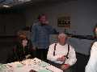
Il y a eu enfin la soirée de remise des prix au Kursaal. Assistance nombreuse dont André Cassagnes,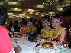
mais aussi de petites danseuses indonésiennes très mignonnes qui sont venues s'asseoir à coté de moi (je vous jure que c'est vrai).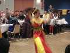
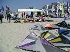
Excuses si vous êtes déçus, je n'ai pas trop suivi les compéts, c'est pas ma tasse de thé, faudra trouver un autre site pour des photos des équipes. Pour info, voici le matos qu'il faut pour les teams du Championnat : 3 à 5 cerfs-volants par participant, et un peu de bricoles pour réparer...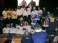
J'étais quand même à la cérémonie de remise des prix, temps fort de la soirée au Kursaal. De belles coupes, des heureux, et quelques sourires jaunes, comme toujours. Mais c'était vendredi soir et on a encore pu s'éclater 2 jours, d'autant plus que le temps a été idéal : soleil, brise de mer vers 11 heures, sans un remous et se renforçant jusqu'à Force 3 dans la journée. C'a été dur de quitter Berck !